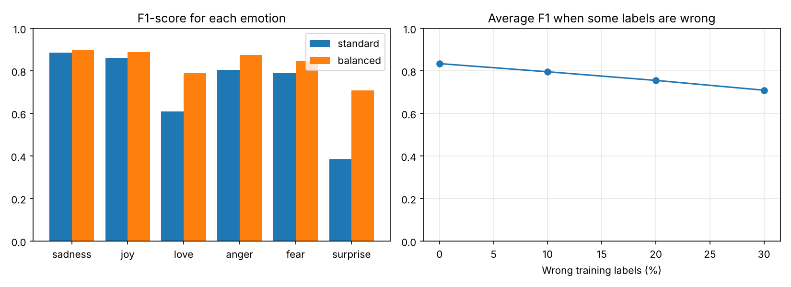

Software Engineering graduate and AI Engineer Intern at TechGeneyes. I build and evaluate machine learning models that are reliable, explainable and useful in the real world, and I am seeking a Master's degree to research trustworthy AI across machine learning, NLP and computer vision.
Grade AFinal year project, BS Hons Software Engineering
3 waysLocal LLM app built with Ollama, LangChain and LangGraph
Projects
Research project
Heart Disease Risk Prediction Using Machine Learning and Deep Learning
Jul 2025 – Jul 2026
Final Year Project, BS Hons Software Engineering · Grade A
I compared Logistic Regression, Random Forest and a neural network (TensorFlow/Keras, with dropout) on 13 clinical features from 597 patient records. The three probabilities are averaged into a Low, Medium or High risk level and shown in a Flask web application.
0.90ROC-AUC, logistic regression and random forest
0.82–0.83Accuracy, cross-validated
597Patient records, 13 features
Demo (16 s): log in, enter a patient record, get a risk level with each model's probability, and view the saved history. The patients are sample records from the project dataset.
Evaluated with repeated stratified 5-fold cross-validation and reported recall, F1-score and confusion matrices, because a missed disease case is the costliest error.
Half of the records had missing values. I compared dropping those rows with median imputation done inside each fold, so no information leaked from validation data. Imputation kept all records, gave similar scores and roughly halved the variation between folds.
Measured permutation feature importance on held-out folds. A linear model and a tree model independently ranked major vessels, chest pain type and thalassemia among the strongest predictors.
Wrote a model card covering intended use and limitations, plus data tests and continuous integration on GitHub Actions.
Detailed results: cross-validation table and feature importance
Repeated stratified 5-fold cross-validation (15 folds), mean ± standard deviation
Missing data
Model
Accuracy
Recall
ROC-AUC
Drop rows (n=298)
Logistic Regression
0.833 ± 0.040
0.790 ± 0.093
0.902 ± 0.046
Drop rows (n=298)
Random Forest
0.822 ± 0.057
0.763 ± 0.085
0.903 ± 0.037
Median imputation (n=597)
Logistic Regression
0.839 ± 0.031
0.771 ± 0.048
0.897 ± 0.023
Median imputation (n=597)
Random Forest
0.829 ± 0.019
0.747 ± 0.045
0.895 ± 0.021
Drop in ROC-AUC when each feature is shuffled, measured on held-out folds.
Python
scikit-learn
TensorFlow / Keras
Pandas
Flask
MySQL
GitHub Actions
NLP project
Emotion Detection from Text
Nov 2026
Personal project
A model that reads a sentence and predicts its emotion: sadness, joy, love, anger, fear or surprise. I trained it on 16,000 sentences with TF-IDF and logistic regression, and used it to answer two questions: does it recognise rare emotions, and what happens when some training labels are wrong?
0.83 → 0.71Average F1 when 30% of training labels are wrong

Left: F1-score for each emotion, standard and balanced model. Right: average F1 as more training labels are made wrong.
Rare emotions were the weak point: the standard model scored only 0.39 F1 on surprise (572 of 16,000 training sentences), even though its average looked fine.
Balanced class weights, which give rare emotions more weight in training, raised surprise to 0.71 and love from 0.61 to 0.79.
Wrong labels slowly damage the model: each extra 10% of wrong labels cost about 0.04 average F1.
The model is easy to explain: its strongest words make sense, for example "terrified" and "nervous" for fear.
Python
scikit-learn
Hugging Face Datasets
Matplotlib
Software project
Local LLM Writing Assistant, built three ways
Nov 2026
Personal project
An offline assistant that drafts emails and corrects English grammar, running on a 4-bit quantized 4B model through Ollama, so no text leaves the computer. I built the same application three times to compare what each framework adds.
Part 2: LangChainchains, structured output, memory, tool-using agent
Part 3: LangGraphself-review loop, human approval, parallel correction
The LangGraph version drafts an email, reviews and fixes its own output, looks up real dates with tools, and waits for human approval before finishing.
Added a guardrail that removes promises the model invents in emails.
Prepared lesson slides that teach LangChain and LangGraph step by step, with this project as the example.
Python
Ollama
LangChain
LangGraph
Pydantic
GitHub Actions
Education
BS Hons Software Engineering, Virtual University of Pakistan
2023 – 2026
CGPA 3.66 / 4.00 · Final year project: Grade A · Completed August 2026
Relevant courses: Artificial Intelligence, Machine Learning, Data Structures and Algorithms, Database Systems, Software Engineering.
Research interests
Trustworthy and explainable AIFaithful, stable explanations and well-calibrated predictions that people can rely on.
Machine learning for healthcareRisk prediction that holds up across patient groups and hospitals.
Human-centred NLP and large language modelsHow the quality of human feedback shapes NLP models; LLM agents with human approval; extracting information from text, including clinical notes.
Computer visionImage classification and analysis, including medical imaging.
Data-centric AILearning from missing, imbalanced, small or noisy data, and building high-quality annotated datasets.
Robust evaluation and generalisationTesting whether models still work beyond their training data, across groups and settings.
Experience
AI Engineer Intern, TechGeneyes
Aug 2026 – Present · Remote
Develop and evaluate machine learning and deep learning models with scikit-learn and TensorFlow/Keras.
Prepare and explore data, engineer features and tune hyperparameters.
Report model performance with precision, recall, F1-score and confusion matrices.
Skills and languages
Machine learning
Logistic regression
Random forests
Feature engineering
Hyperparameter tuning
Cross-validation
Missing-data imputation
Deep learning and computer vision
Neural networks
Dropout regularisation
Computer vision
TensorFlow
Keras
Model evaluation and explainability
ROC-AUC
Precision and recall
F1-score
Confusion matrices
Permutation feature importance
Model cards
NLP, LLMs and agents
NLP
Chatbots
Few-shot prompting
Structured output
Tool-using agents
Human-in-the-loop
Ollama
LangChain
LangGraph
Pydantic
Data science
Python
Pandas
NumPy
scikit-learn
Matplotlib
Seaborn
Jupyter
Hugging Face Datasets
Data annotation and label quality
Software engineering and automation
Flask
SQL
MySQL
Git and GitHub
GitHub Actions (CI)
pytest
Python automation
Languages: English, B2 (CEFR) in listening, reading, speaking and writing.
Future research directions
My final year project left me with more questions than answers. These are the ones I would like to take into a Master's thesis:
Explanations for single patients. Permutation importance tells me what matters on average. A doctor needs to know why the model flagged this particular patient, so I want to compare per-patient methods such as SHAP and check whether their explanations stay stable.
Probabilities that mean what they say. My risk levels are fixed cut-offs on an averaged probability. I want to learn how to calibrate models so that a predicted 70% risk really corresponds to about 70% of patients.
Learning from imperfect labels. In my emotion project, wrong training labels steadily lowered performance, and rare emotions were the hardest to learn. I want to study how real annotators make mistakes and how to collect labels that keep models reliable for rare cases.
Will it work somewhere else? I have not yet checked performance across age and sex groups or on data from another hospital. Testing for this kind of failure is, I think, the most important step before any clinical model is trusted.
I am applying for Master's programmes in Artificial Intelligence, Machine Learning and Computer Science for 2027 and would be glad to hear about thesis or research assistant opportunities.